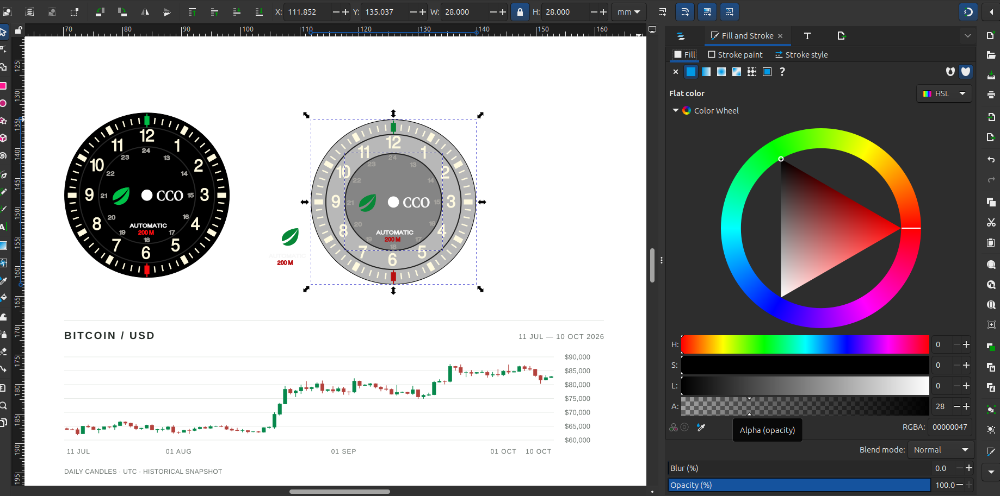
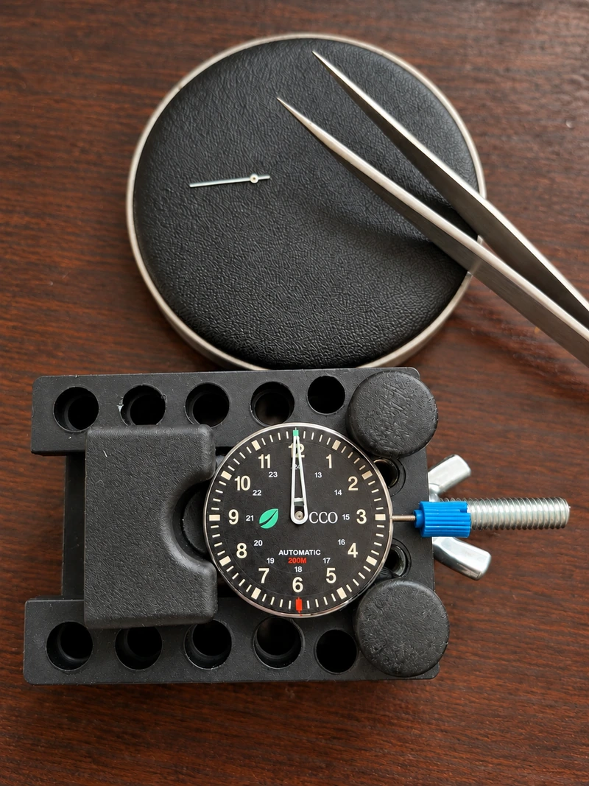
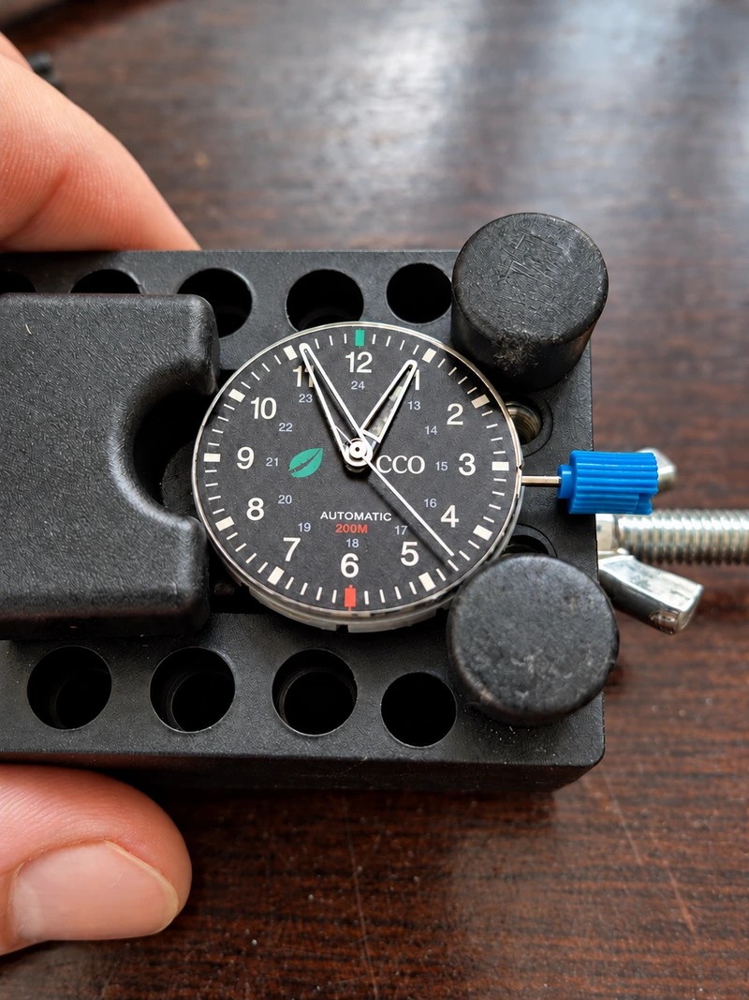
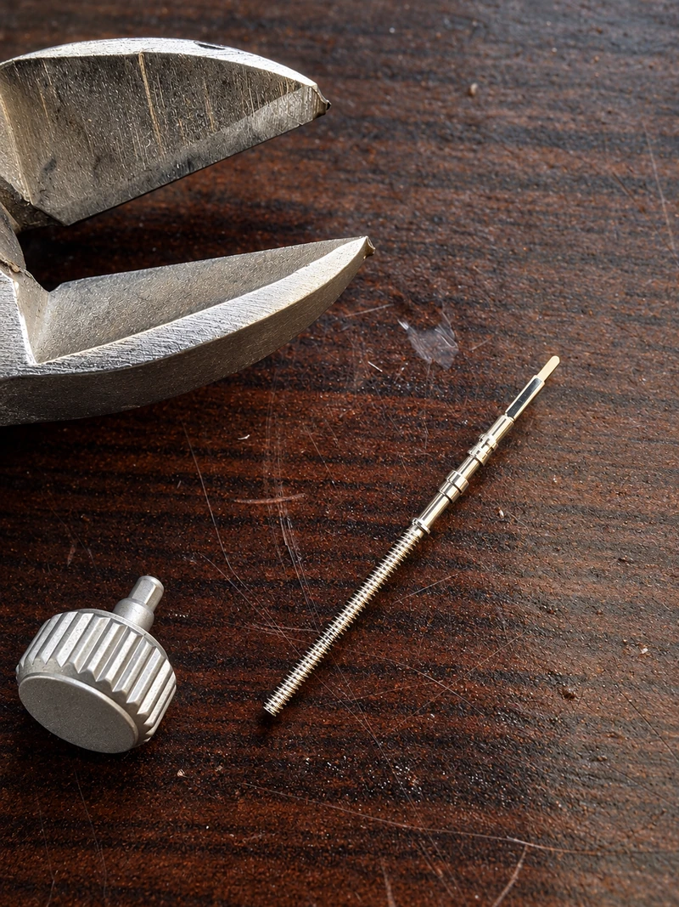
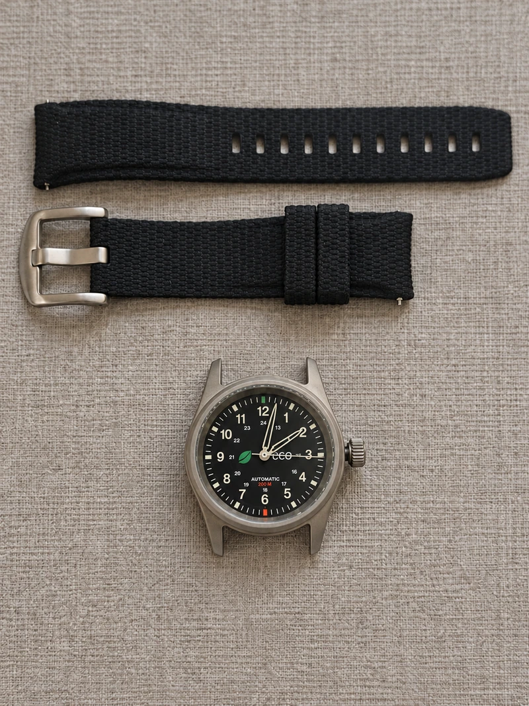
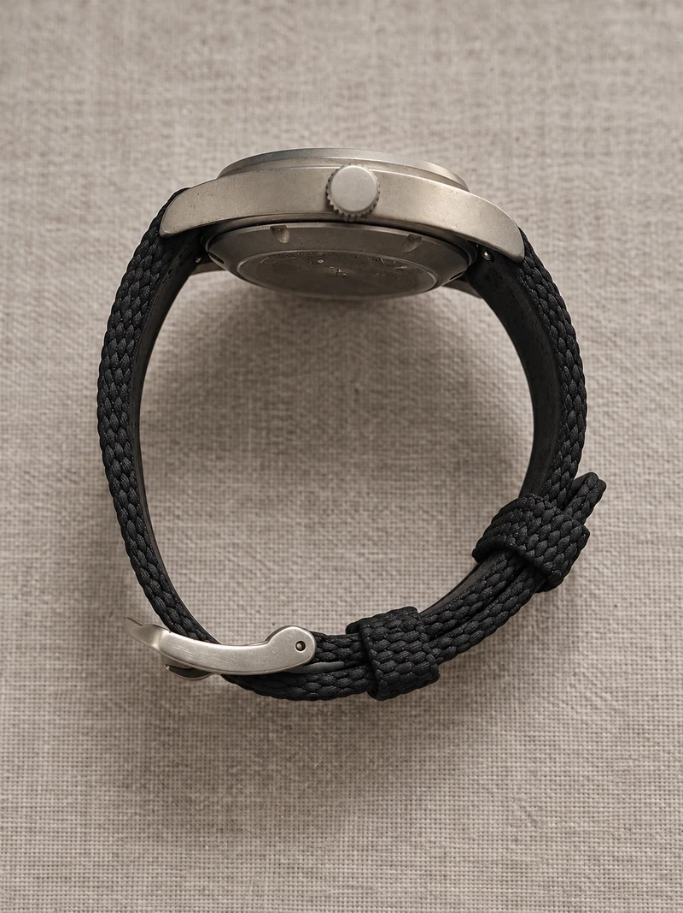
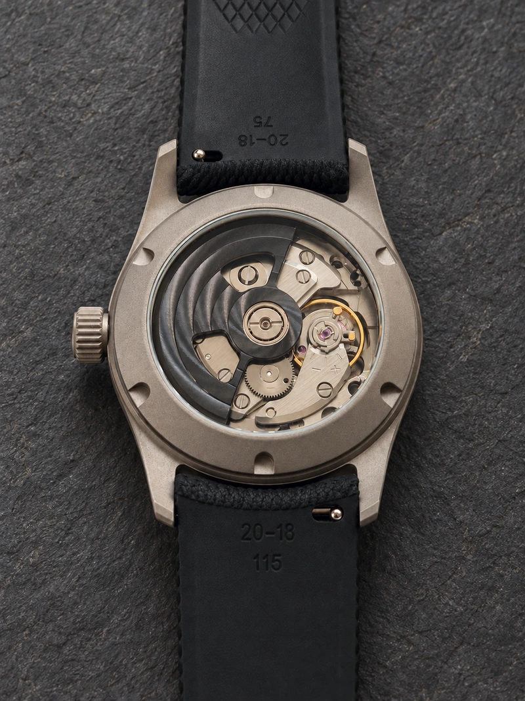
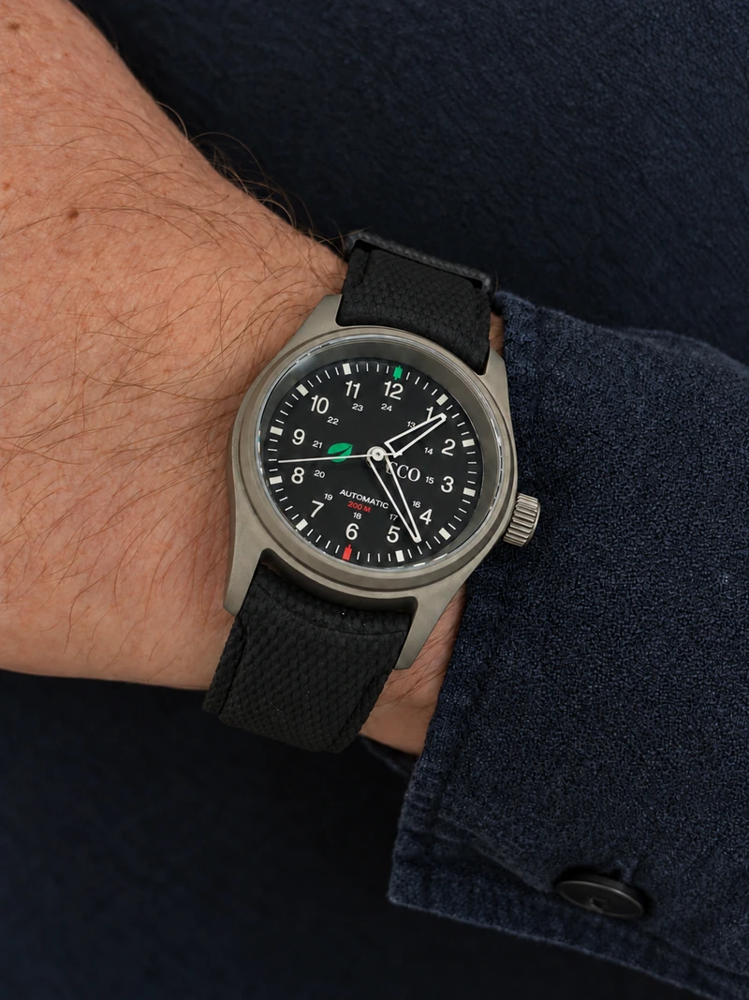
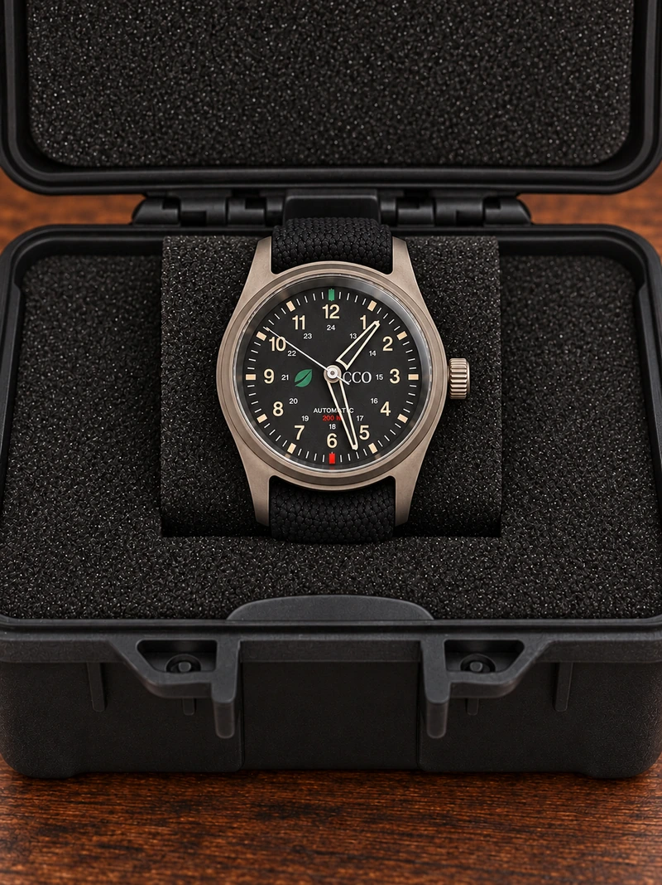

One-of-one
PJW-001-2026
PROJECT No. 001
Custom Automatic Field Watch
2026 Edition 001 / 001

A record of one watch, from its first intention to its final assembly. An original field-watch dial, selected mechanical components and a custom black rotor come together in a personal commission.
01 / The commission
Made for one
individual.
A one-of-one custom automatic field watch, created for a specific recipient.
The project is intended to reflect discipline, precision, resilience and purpose. Its direction is informed by the recipient’s distinguished military and law-enforcement background, expressed through a practical format and considered details.
An original dial design brings a personal identity to a watch built around selected mechanical components.
02 / The inspiration
Three points of reference.
I / The field watch
Clarity of purpose.
Traditional mechanical field watches provide the foundation: direct time reading, Arabic numerals and a restrained hierarchy of information.
II / The recipient
A personal context.
The recipient’s military and law-enforcement background informs the character of the watch, with an emphasis on discipline, resilience and utility.
III / The visual language
Considered symbolism.
The design draws inspiration from the visual identity and philosophy of Bitfinex, expressed through selected motifs, color and dial details.
03 / Design philosophy
Legibility first.
Meaning in the details.
A matte black field-watch dial establishes a quiet foundation. The design intent balances clear time reading with small, specific references to the recipient.
- A clear hierarchy
- A full 1–12 Arabic numeral layout, subdued 13–24 inner numerals and a restrained minute track.
- Two measured accents
- A green bullish candlestick at 12 and a red bearish candlestick at 6. Color is confined to specific symbolic details.
- Personal references
- The Bitfinex leaf motif and “CCO” bring the personal references into the dial.
- Dial inscriptions
- “AUTOMATIC” in white and “200 M” in red complete the lower half of the dial.
04 / Designing the dial
From vector to dial.
The dial evolved from monochrome studies to a complete graphic layout. An unsuccessful UV-print trial led to a new dial with a bespoke graphic overlay.



Physical trial / Recorded
Where the print fell short.
The first UV print sits too far to the right, leaving uneven space around the dial. The “24” beneath “12” is also missing. The inspection below records these and the other visible print defects.
The result was frustrating and fell short of expectations. With very little time left before the deadline, a workable alternative had to be found quickly.

Under inspection
-
01 Print shifted to the right
Too much space remains along the left edge, while the minute track crowds the right. The artwork is not centred on the dial.
-
02 Missing “24”
The inner 24-hour scale is incomplete: “24” is absent directly beneath “12”.
-
03 Numeral edges
The white numerals have visibly rough, uneven edges.
-
04 Fine circular rules
The thin rings look uneven, with doubled edges in places.
-
05 Small red lettering
The “200 M” inscription loses definition at this scale.
OutcomeRejected for this build.
- 01 — Vector development
- Typography, numeral hierarchy and the minute track establish the layout. The leaf motif, initials and two colored accents give the dial its identity.
- 02 — Physical trial
- The UV print revealed an off-centre layout, a missing “24” and uneven detail. The trial was rejected.
- 03 — Graphic dial overlay
- A new dial with a bespoke graphic overlay provided the solution after the first print attempt.
05 / Components
The mechanical foundation.
The movement, case, hands and strap, photographed before assembly.

TMI NH38 Automatic
TMI (Seiko Group) · No date
24 jewels. 21,600 beats per hour / 3 Hz. Approximately 41 hours of rated power reserve, with automatic and manual winding and hacking seconds. This photograph shows the movement with its original rotor, before customization.


Case & dial substrate
36 mm titanium case · Silver/grey finish
A 36 mm titanium case with sapphire crystal and an exhibition caseback. Beside it, the matte-black dial substrate before printing.


Hands & strap
Selected components · Before fitting
Skeletonized “Phantom” style hands and a 20 mm black strap, selected to complement the restrained field-watch dial.


06 / The build
The build record.
From movement to finished watch.
A custom black rotor gives the NH38 a darker character through the exhibition caseback. With the replacement dial ready, the hands, crown and strap bring the individual components together.
NH38 / Custom black rotor
Rotor customization.
From the original silver rotor to the fitted black replacement.


At the bench
Bringing it together.
With the replacement dial in place, the build moved through hand fitting, stem preparation and casing. The black strap completes the watch.


A new face
The graphic dial overlay brings the artwork back to centre, with the complete 24-hour scale beneath the hour numerals.
Three hands
Hour and minute hands are aligned together before the slender seconds hand is fitted.
The final fit
Preparing the stem sets the crown’s position against the case. The two strap halves complete the assembly.


07 / The finished watch
A study in detail.






08 / Technical specifications
The details, recorded.
Selected components and dimensions.
- Project
- PROJECT No. 001
- Reference
- PJW-001-2026
- Edition
- 001 / 001
- Movement
- TMI NH38 Automatic
- Jewels
- 24
- Frequency
- 21,600 bph / 3 Hz
- Power reserve
- Approx. 41 hours rated
- Winding
- Automatic + manual
- Hacking
- Yes
- Date
- None
- Case
- 36 mm titanium · Silver/grey finish
- Crystal
- Sapphire
- Caseback
- Exhibition
- Rotor
- Custom black rotor
- Hands
- Skeletonized / transparent Phantom style
- Strap
- Black, 20 mm
- Dial
- Custom matte black field-watch designBespoke graphic dial overlay
- Water resistance
- Not pressure-tested
Credits
NH38A movement drawing and nominal dimensions: TMI · NH38A specification, page 3 ↗. Drawing palette adapted.
Royal Ulster Constabulary badge ↗ by MrPenguin20, with elements by Sodacan and Tonyjeff. CC BY-SA 3.0 ↗. Scaled and colors muted; the badge adaptation is shared under the same license.
One watch. One recipient. One story.
Back to Project Archive